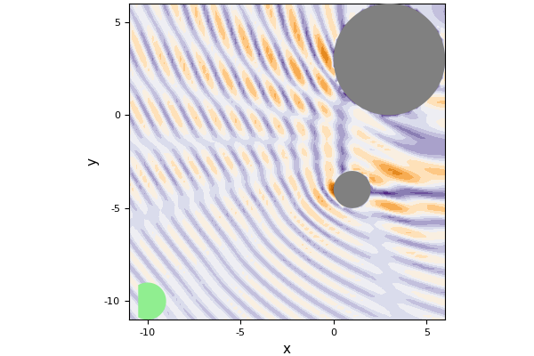

Two particles
Define two particles with the first centred at [1.0,-4.0], with radius 1.0, sound speed 20.0, and density 10.0. The second particle is centered at [3.0,3.0], with radius 3.0, sound speed 1.0, and density 0.1.
using MultipleScattering
using Plots
pyplot()
p1 = Particle(Acoustic(2; c = 20.0, ρ = 10.0),Sphere([1.0,-4.0], 1.0))
p2 = Particle(Acoustic(2; c = 1.0, ρ = 0.1),Sphere([3.0,3.0], 3.0))
particles = [p1,p2]Specify the angular frequency of the incident wave and calculate the response.
ωs = collect(0.1:0.01:1.0)
source = plane_source(Acoustic(1.0, 1.0, 2));
# Calculate and plot the frequency response at x.
x = [[-10.0,0.0]];
simulation = run(particles, source, x, ωs)
plot(simulation)The above used an incident plane with the default position at [0.0, 0.0] and was simultated in the x direction. To change these defaults use:
x = [[-10.0,-10.0]]
source = plane_source(Acoustic(1.0, 1.0, 2); direction = [1.0,1.0], position = [0.0,0.0]);
simulation = run(particles, source, x, ωs)Then plot the response around the particles and receiver.
region = Box([[-11.0;-11.0], [6.0;6.0]])
ω = 3.2
result = run(particles, source, region, [ω]; res=80)
plot(result, ω; field_apply=abs, seriestype = :contour)
The green circle in the plot is the receiver position. Looking at the region between the particles we see the complicated results of multiple scatttering.